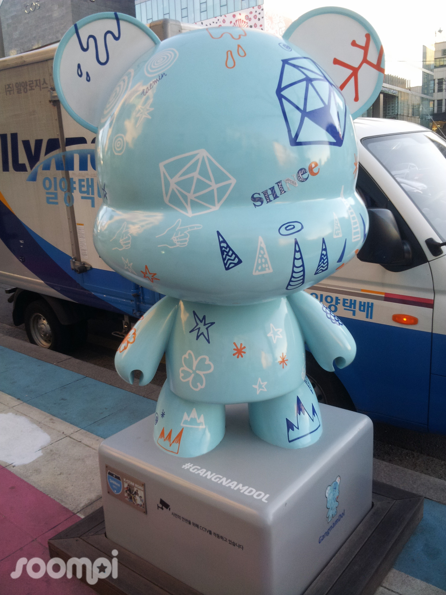

|
K-Pop is an immensely profitable industry and commodity. The culture industry that produces it obviously invests a lot of money in this, however they also recieve a lot of support from local and national government in South Korea.  In particular, K-Pop has been a source of international tourism (Oh, 2018) as well as obvious income from groups touring, merch sales and so on. It has also been championed as part of international relations programmes, with K-Pop groups and idols appearing as cultural ambassadors for South Korea in official capacities. State support has been particularly evident, for example through the Korean Foundation for International Cultural Exchange (KOFICE), a government body that produces reports on the state of Hallyu worldwide and on state strategy towards cultural exports. |